|
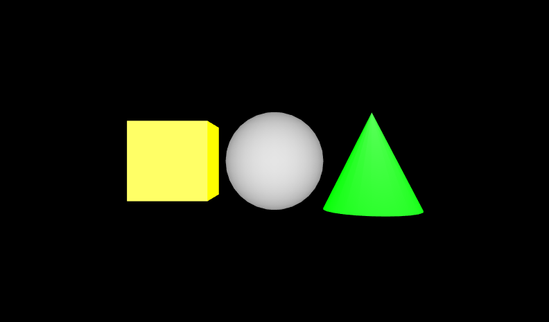
|
Appearance and Material nodes control a shape's shading color (diffuseColor), glow color (emissiveColor), transparency, shininess, and ambient intensity.
Colors specify a mixture of red, green, and blue (RGB) light with component values between 0.0 (none) and 1.0 (lots).
ColorInterpolator can animate color values, and
ScalarInterpolator can animate transparency values.
These X3D scenes are adapted directly from the
original VRML 2.0 Sourcebook chapter examples.
Also available:
Introduction to VRML97 SIGGRAPH98 course notes.
|
![[1] Figure10.04BrightRedSphere.x3d - Desk lamp](_viewpoints/Figure10.04BrightRedSphere.x3d._VP_Desk_lamp.png){kind=link}
![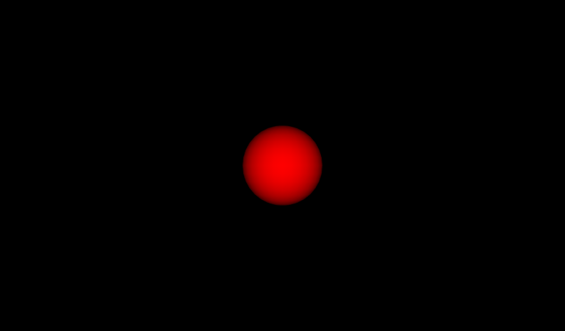[2] Figure10.04BrightRedSphere.x3d - (default X3D view from 0 0 10)](_viewpoints/Figure10.04BrightRedSphere.x3d._VP_Default_viewpoint.png){kind=link}
![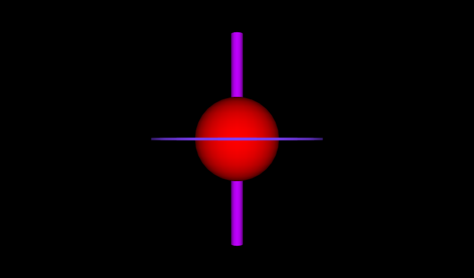[3] Figure10.05MultiColoredSpaceStation.x3d - 5m space station from 8m away](_viewpoints/Figure10.05MultiColoredSpaceStation.x3d._VP_5m_space_station_from_8m_away.png){kind=link}
![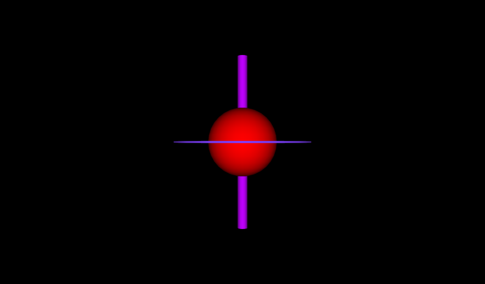[4] Figure10.05MultiColoredSpaceStation.x3d - (default X3D view)](_viewpoints/Figure10.05MultiColoredSpaceStation.x3d._VP_Default_viewpoint.png){kind=link}
![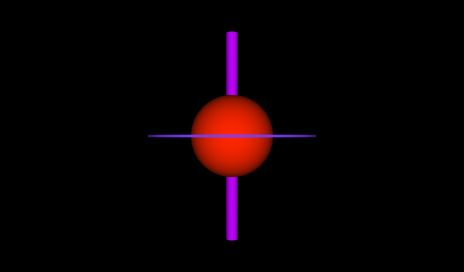[5] Figure10.06PulsatingSpaceStation.x3d - 5m space station from 8m away](_viewpoints/Figure10.06PulsatingSpaceStation.x3d._VP_5m_space_station_from_8m_away.png){kind=link}
![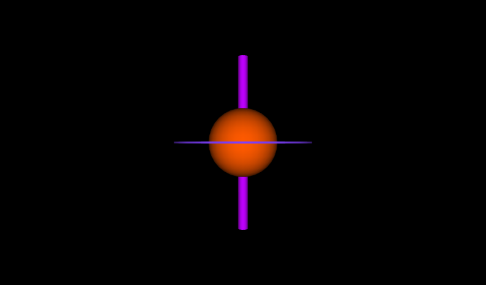[6] Figure10.06PulsatingSpaceStation.x3d - (default X3D view from 0 0 10)](_viewpoints/Figure10.06PulsatingSpaceStation.x3d._VP_Default_viewpoint.png){kind=link}
![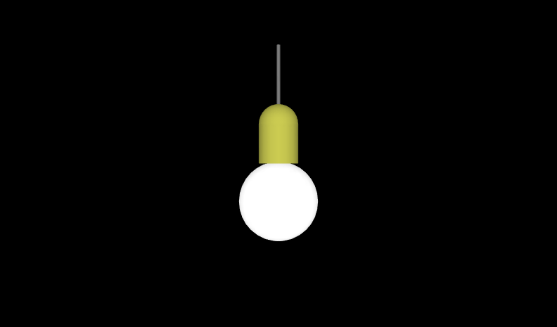[8] Figure10.07LightBulb.x3d - (default X3D view from 0 0 10)](_viewpoints/Figure10.07LightBulb.x3d._VP_Default_viewpoint.png){kind=link}
![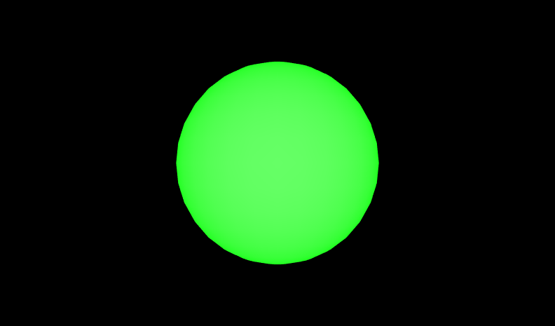[9] Figure10.08BlinkingSphere.x3d - Blinking ball](_viewpoints/Figure10.08BlinkingSphere.x3d._VP_Blinking_ball.png){kind=link}
![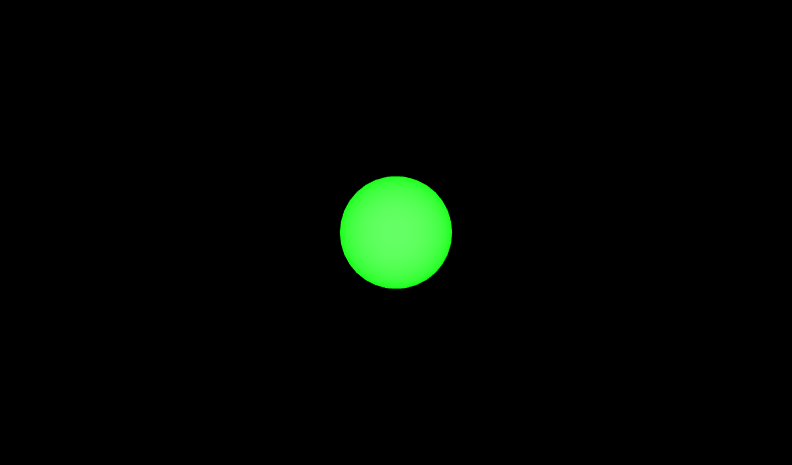[10] Figure10.08BlinkingSphere.x3d - (default X3D view from 0 0 10)](_viewpoints/Figure10.08BlinkingSphere.x3d._VP_Default_viewpoint.png){kind=link}
![[11] Figure10.09ThreeBlinkingShapes.x3d - Blinking shapes](_viewpoints/Figure10.09ThreeBlinkingShapes.x3d._VP_Blinking_shapes.png){kind=link}
![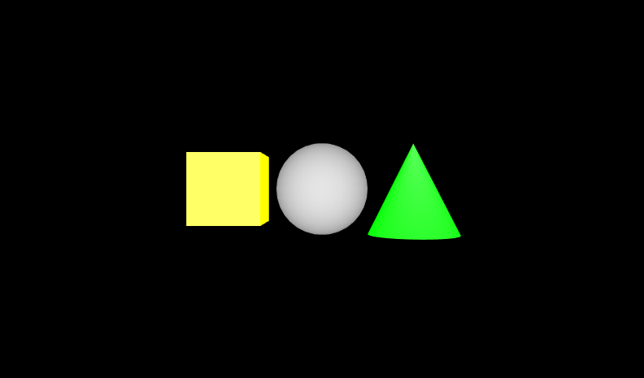[12] Figure10.09ThreeBlinkingShapes.x3d - (default X3D view from 0 0 10)](_viewpoints/Figure10.09ThreeBlinkingShapes.x3d._VP_Default_viewpoint.png){kind=link}
![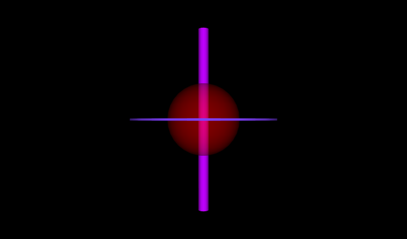[13] Figure10.10SemiTransparentSpaceStation.x3d - 5m space station from 8m away](_viewpoints/Figure10.10SemiTransparentSpaceStation.x3d._VP_5m_space_station_from_8m_away.png){kind=link}
![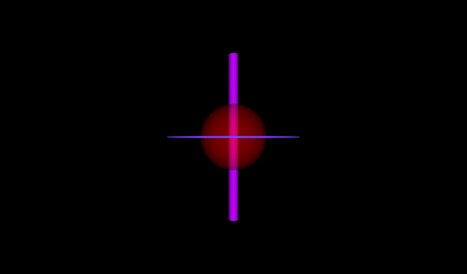[14] Figure10.10SemiTransparentSpaceStation.x3d - (default X3D view)](_viewpoints/Figure10.10SemiTransparentSpaceStation.x3d._VP_Default_viewpoint.png){kind=link}
![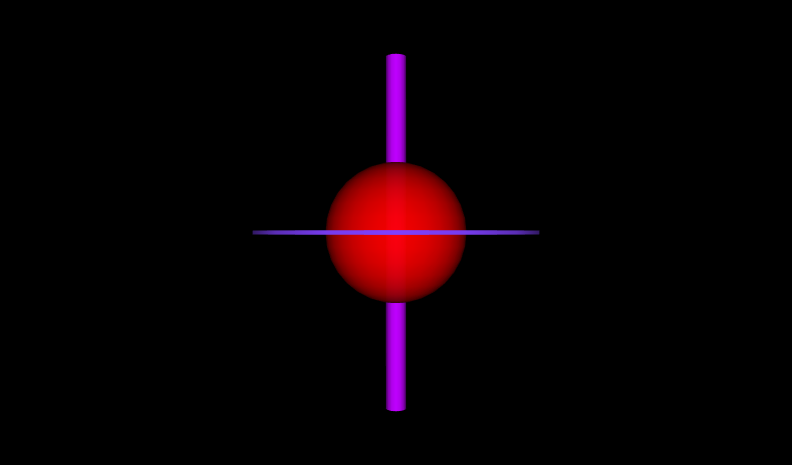[15] Figure10.11AnimatingTransparencySpaceStation.x3d - 5m space station from 8m away](_viewpoints/Figure10.11AnimatingTransparencySpaceStation.x3d._VP_5m_space_station_from_8m_away.png){kind=link}
![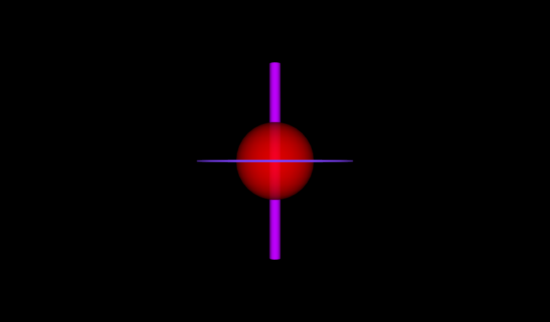[16] Figure10.11AnimatingTransparencySpaceStation.x3d - (default X3D view)](_viewpoints/Figure10.11AnimatingTransparencySpaceStation.x3d._VP_Default_viewpoint.png){kind=link}